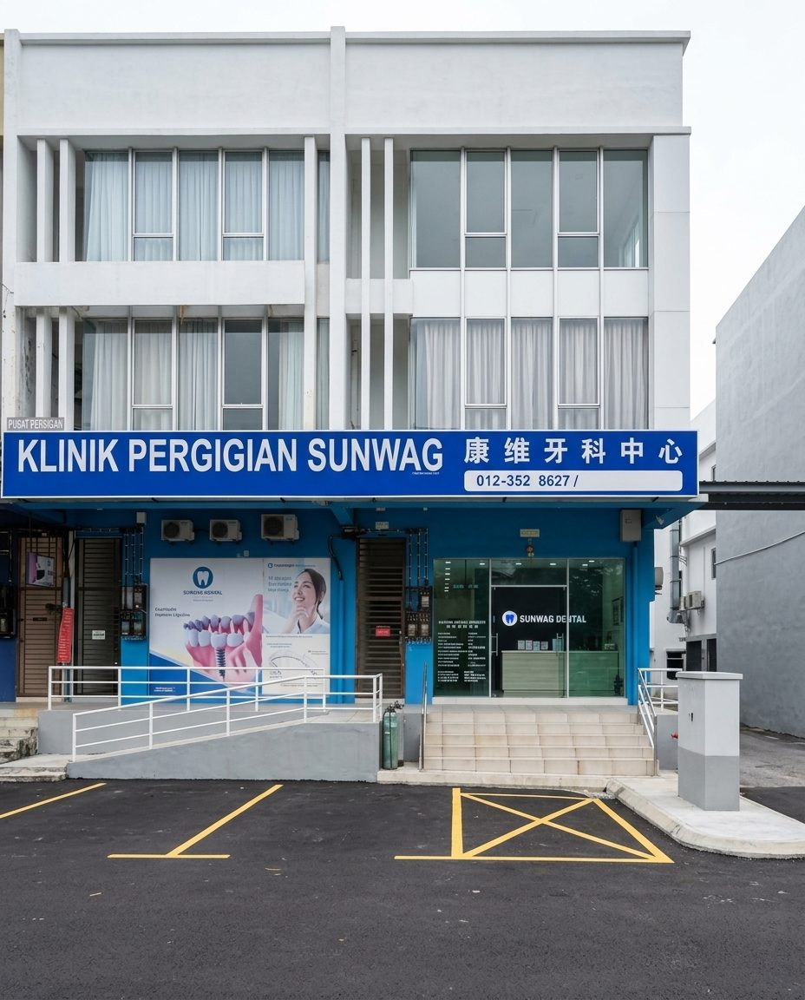

Orthodontics
Braces and clear aligners. We start from what you would like to change, then explain the workable options and how long each one takes.
Braces and clear alignersSunwag Dental Surgery. Cleanings and fillings, teeth whitening, implants and orthodontics — we explain what we find before anything starts, and you decide.

Sunwag Dental Surgery is a general dental practice in Taman Ungku Tun Aminah. Alongside routine check-ups, scaling and fillings, we handle more involved work such as implants, root canal treatment and orthodontics. Every plan is based on an examination, with X-rays where they are needed, and the options are explained before anything begins.
From a six-monthly check-up to implants that need an X-ray before anything is decided.
Braces and clear aligners. We start from what you would like to change, then explain the workable options and how long each one takes.
Braces and clear aligners
Routine scaling and cavity fillings. A check-up every six months saves a lot of trouble later on.
What a check-up covers
Replacing a missing tooth. We check bone and gum condition first, then talk through what suits you.
How an implant goes in
Whitening only lightens natural enamel — fillings and crowns stay the same shade. We check first, then tell you how much lighter is realistic and how long it tends to last, so you start with the right expectations.
What we check firstTell us what you would like looked at and roughly when suits you. We will find you a slot, so you are not sitting and waiting.
After the examination we go through what we found, what the options are and how long each takes. You decide, then we begin.
Jalan Pendekar 13, with parking right in front. An easy drive from anywhere around Skudai.
36 & 38, Jalan Pendekar 13, Taman Ungku Tun Aminah, 81300 Johor Bahru, Johor
You do not have to wait until you are in the chair. A WhatsApp message is enough.